花花的火火。華晨宇唯粉。愛好脆皮鴨。超喜歡歌劇。糾結尷尬癌。強迫症患者。超深度社恐。超級喜歡華晨宇，花花就是我的小天使，希望大家都可以喜歡他愛護他不要黑他，不然我會生氣的，就醬。
I am one of ETs, the fans of Fafa. What is called weak water three thousand only take Duncan, there are too many stars but I just like him. In addition, I feel enthusiasm for gay novels. But I'm crazy about opera as well. I'm a tangled people. And maybe I have OCD, just a bit. The most important thing is that I am a social phobic. ( I'll quake at the thought of meeting strangers. That's cool. ) I love Hua Chenyu, he is my honey ( Shut up ). So please don't speak ill of him, especially in front of me, or I'll be angry. That's all.
拒絕提供社交信息 再見 [No IG.]
就超正經的ORDINARY女大學生啦。現就讀于世新大學資訊傳播學系，超喜歡這裡的。我學習很一般，嗯沒錯。但是我可愛啊0w0
I'm not a (fake?) serious person. And now, I'm study in the department of Information and Communications at Shih Hsin University(SHU). I love here so much and I'm just an ordinary and normal female student. But I think that I'm cute enough! Don't you think so?
這世界的書籍中大概只有自七年前開始就陪伴著我的脆皮鴨文學能夠帶給我心靈上的慰藉了吧。可能還有一些矯情做作的詩集。
I'm in love in dirty books since seven years ago. This is because the books can let me relax myself in the high pressure world . Thus, sometimes I also will create some poem to express my emotion. No matter is happy or sadness.
沒幹過什麼大事兒吧，小打小鬧倒可以說是很順手了。旅行深夜和獨處都能帶給我靈感。我要從南走到北，我還要從白走到黑。我要人們都看到我，但不知道我是誰。
Naver in charge of any big deals but I'm a small trouble-maker. I like to stir up trouble for my beloved friends! Staying alone in the midnight can always give me lots of great idea. I want to travel around the world from dark to dawn. I wish everyone can see me, but don't know who I am.
世新大學學士Bachelor of Mass Communication, Information and Communications, Shih Hsin University（SHU）
學生High School Affilited to Nanjing Normal University Jiangning Campus（NSFZ-CN）
好看的小哥哥小姐姐以及脆皮鴨文學。 Pretty boys, pretty girls and CPY articles.
玄學和哲學我也是有點喜歡的。 Also like the metaphysics and philosophy.
環遊世界，并擁有一個願意和我一起環遊世界的可愛伴侶。 Travel around the world， and have a lovely lover who is willing to travel around the world.
擁有一家自己的花店。 Own a flower shop.
……好像真的暫時沒什麼好放的0n0
1 沙灘上的名字
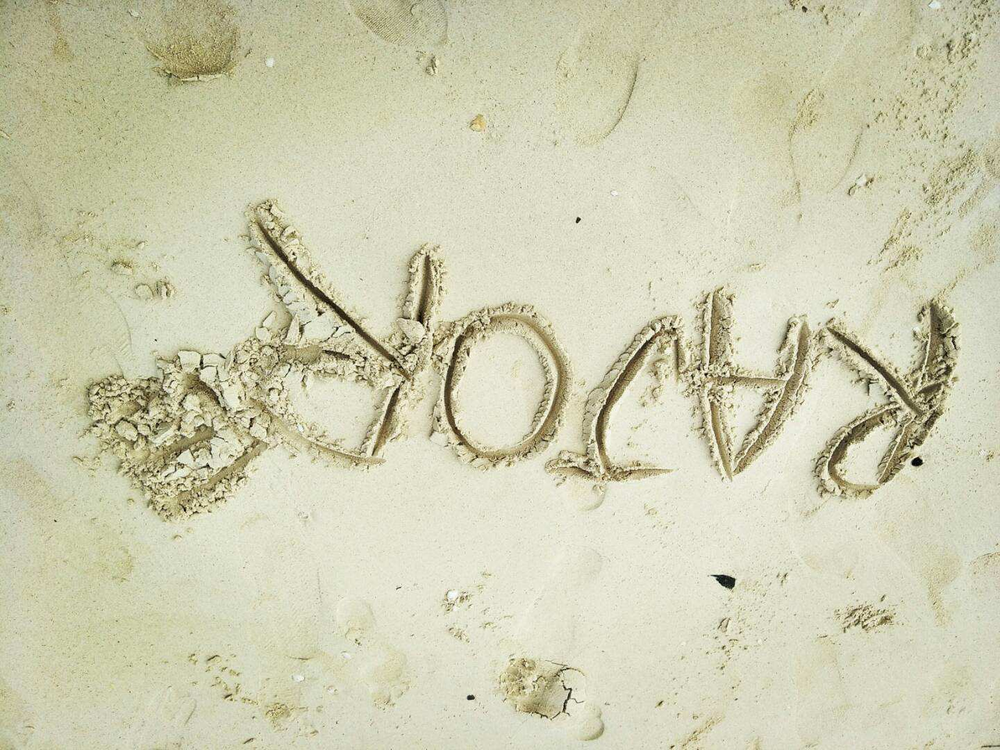2 大稻埕博物館里的鈔票 囍
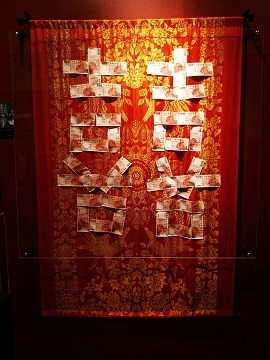3 世新舍我樓的畫
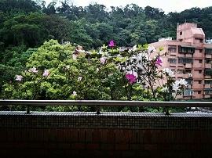4 蘭卡威海灘上的漁船
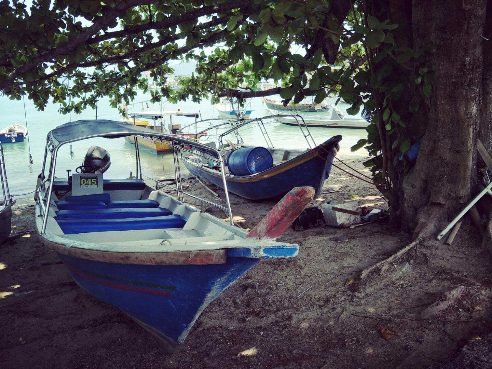5 碧潭磚塊刻畫
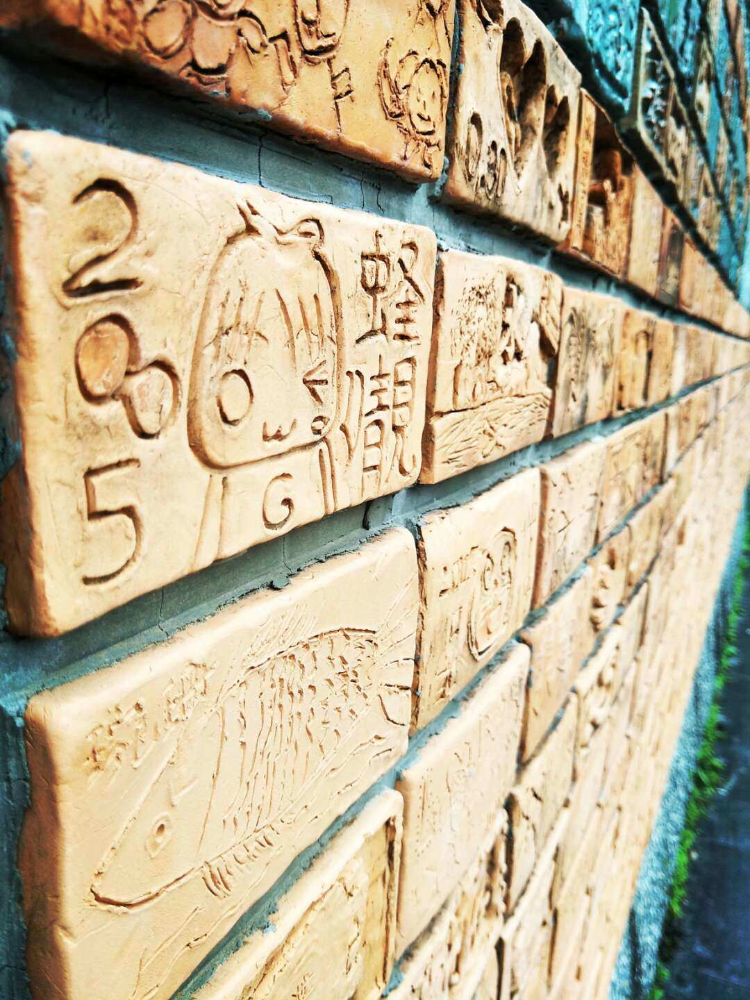6 碧潭春季美景
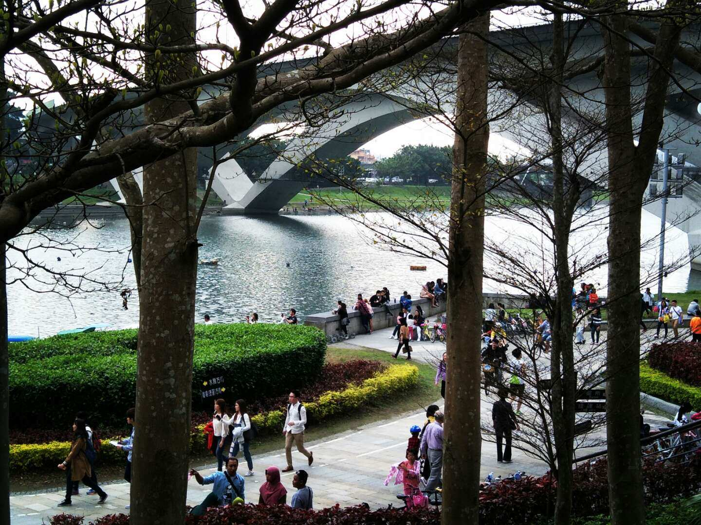走向你
咔嚓一聲下去，絲帶滑開，壁爐兩側的松針卻沒有著地。噼啦噼啦，「呲——」的，在笑。在笑你。笑你寡淡的生活，沉重的外衣，一點也不幽默，還半絲不諳情趣。
銀色的鈴鐺裝飾無華的土地，忠誠的樸實也被割裂殆盡。零落的叮鈴叮鈴，嚶嚶的餘韻，在哭。在哭你。哭你從未快意跌宕的人生，終日沉默卻又不時的歎息，看不懂世事包裹的濃艷華麗，更不明白世人難抑的悸動，遑論爛漫處，使你難堪的春情。
可我不願嫌棄，咯咯的傻笑或咽咽的低鳴，多少個朦朧日夜中，在想。在想你。想你冷漠平靜的表情，偶爾無奈的鬆開衣領，檀木的香氣，與松柏的內裡。我的眼睛始終注視著你，從山河崩塌，到王國崛起。除了我，還有誰這樣愛你？
我吹著口哨，在通往你的道路上，煢煢一身，踽踽獨行。
7 嚐鱻壽司集錦
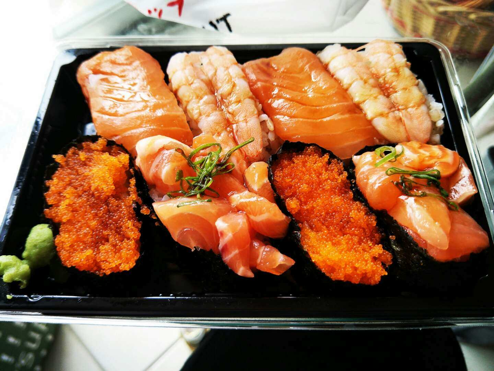8 一種記不得名字的好吃雞
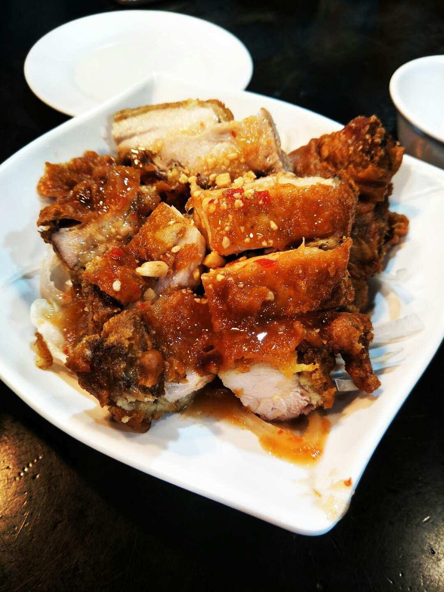9 景美夜市小鴨滷味
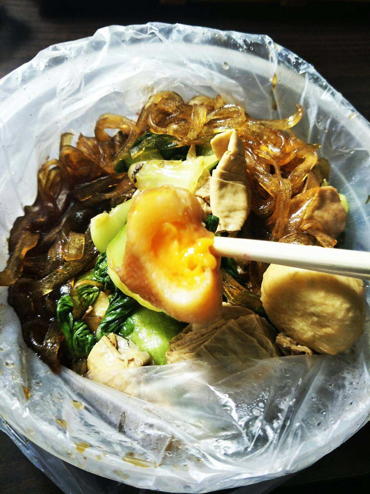10 炙烤牛肉飯
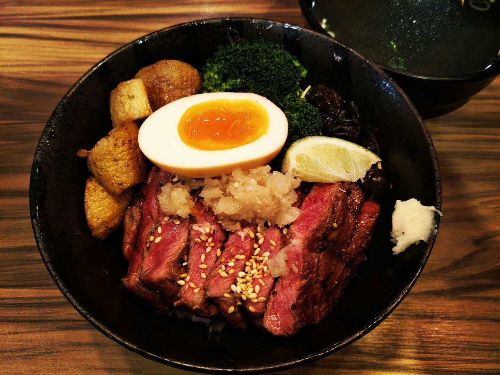11 木瓜泡牛奶
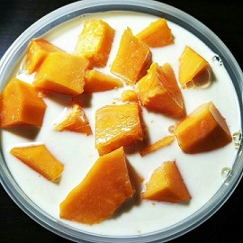12 菲力牛排
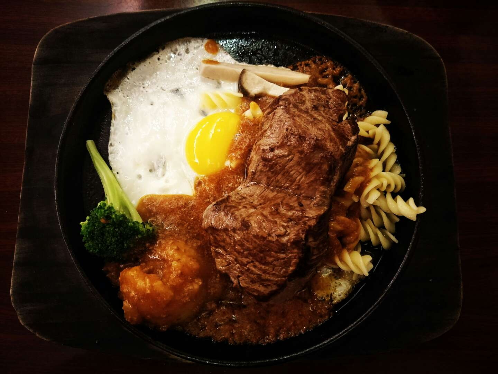城垣 城緣
昔日龍垣環碧水，游騎常伴斜陽歸。牧童牽牛戲采薇，流連瑰彩倚芳菲。躊躇林樾飲甘霈，徘徊花蔭生葳蕤。還城雲起當齊霨，鳥振翽翽驚稚騅。蕞爾細毳垣城墜，霞暮碎染映春暉。恍惚星墮復月腓，圍龍城內車馬韝。陌上人家男兒哪？鞠躬盡瘁戍邊陲。縱馬長歌複長醉，不定北疆誓不回。
昔日銅門立崔巍，將軍登頂點其麾。姽嫿帳前歎娓娓，蹙額斂眉不能寐。華妝綷縩步出閨，百卉具腓思成痗。猶記當年鳴鴦佩，鴛鳥故去傍誰飛？常對白粥揭面䭔，不為盛食拒竹簋。曾有編罻覆穀穗，倏爾鈴動陣噦噦。垝垣斷去著素縗，守得讆言度餘晷。殘年空待自憔悴，流雲靉靆折青椑。
昔日闤闠任喧豗，志士鐾刀飾琫琲。煙花巷裡眼兒媚，狀元樓內酒續罍。載戢干戈留銀鐓，髫年盤鬏黃髮垂。娭毑頻候麟兒晬，岸行流水漏胡荽。鬯從狼毫錕鋙繢，疾令剞劂刻龍夔。長撩纓槍提鞍轡，盡飲醪槽話青梅。擐甲執兵馬騤騤，齎志而歿屍儽儽。空憐窀穸意常懟，何以曰順頌台綏。
昔日閶闔千台綴，朱垣紀古走龍髓。衛持鐵戟立幖旆，因掌赬柲指奸宄。英雄卸甲趁香幃，髀肉複生奈何誰？樓闕重掩佳人頠，君明宸衷亦無畏。變生肘腋道庸憒，懲前毖後思方悔。鞍韂臨淵盡浸衃，人行佁億馬虺虺。襜褕扶乩演皇威，跋前疐後棄瑒圭。殘編斷簡細疵纇，半卷帡幪瘞閣揆。
昔日廛居臨嬋桂，蟾宮躔行潺流洄。馝馞箯輿啟柴扉，垣牆斑駁依葛藟。襏襫青皠把杆垂，漁舟燈影溢筐蕢。城壕漫潨城樓偉，攻成惟仗木石雷。監宦載筆公為賄，曲隨其意文骫骳。能使矞雲鬧烽燧，會就昏瞢戰鼓擂。戎馬倥傯何嘗餒？寄骨靈櫬甮靈襚。不幸縲絏長相對，裂裳裹足無限悲。
昔年故去城垣內，緣起垣城雲煙霏。豪傑婧媛以薄醊，千隳百轉又祥瑞。列土封疆顯鼎貴，謦欬親聆笑相隨。山川舊夢幾回味，不勝浮生一場醉。
13 阿花1
14 阿花2
15 壽喜燒
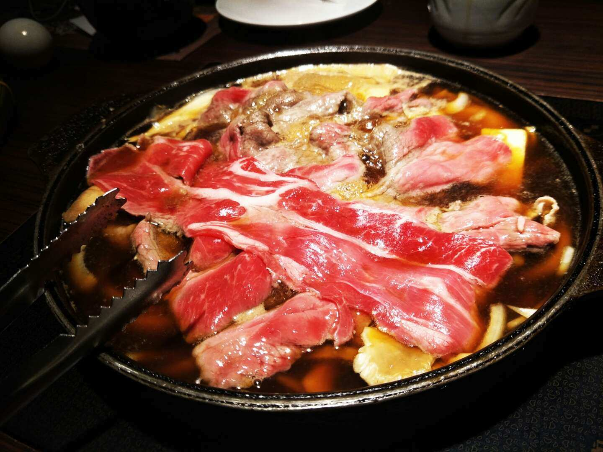16 檸檬雞
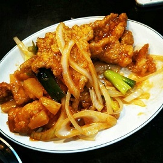17 葡萄
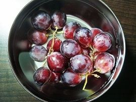18 影象數位化處理期末作品
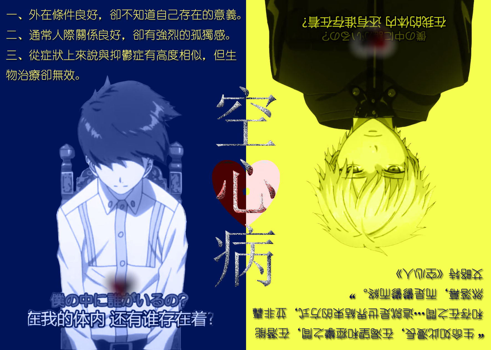